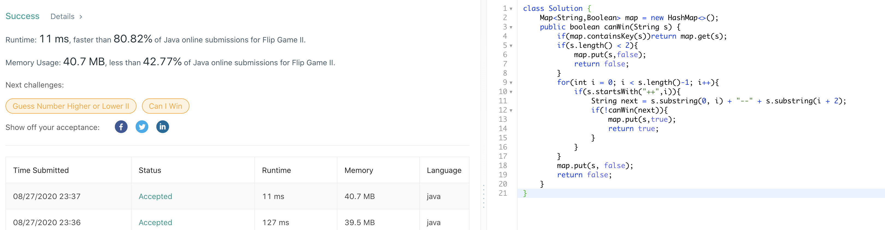
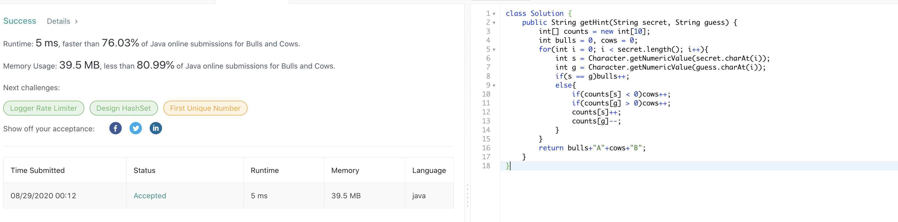

268. Missing Number
官方思路:
- gaussian formula
- bit
思路整理：
用高斯求和算出应该有的总合后减去实际有的总合就可以直接得到漏掉的数字。或者使用bit manipulation方法，观察到从缺失的那一位开始index都比实际数字少1，我们可以利用这个性质。先将missing value设置为nums.length。然后遍历nums数组将missing 每次分别和index i以及实际数字 nums[i] 做xor运算。结果是不缺失的数字都是成对出现于是两两相消，最后只剩下未消掉的缺失数字，也就是答案。

270. Closest Binary Search Tree Value
官方思路:
- inorder recursive
- binary search
思路整理：
最先想到inorder recursive，简单暴力，由于没有helper当root为空时返回距离target最远距离，其他情况比较root值，左子树返回值以及右子树返回值（recursive）并返回距离target最近的值即可。并一种更简洁并且充分利用bst性质的方法是binary search，在root节点 不为空时持续向下寻找，每次通过判断当前root值于target大小关系决定向左边还是右边寻找，距离target最近的节点值必然存在于这条路径中，在搜索途中维护一个全局最接近target值，最后作为结果返回即可。

271. Encode and Decode Strings
官方思路:
- Chunked Transfer Encoding
思路整理：
思路很有意思一道题，encode所采用的策略是将list中的每个string的长度信息和string本身一起encode进一个string里（注意长度string和substring本身需要用一个非数字字符分隔开方便之后拆分），相对的decode时每次根据一下个要拆分的string长度信息结合indexof方法定位 substring的位置。decode具体做法为设置一个指针初始值为0，在i指针未达到s结尾时进行while循环，每次调用indexof方法直接得到下个分隔字符位置index1（字符前面为位置信息，后面为substring本身）。我们知道从i到index为储存位置信息的字符段，用integer的valueof方法拿到下个substring长度（len）后就可以通过substring index+1到index+1+len直接拿到substring本身。这样一个substring的decode就结束了，将i指针移动到下个substirng长度信息字符串开始位置，即index+1+len即可。

274. H-Index
官方思路:
- sort
思路整理：
画图有助于理解此题，题目问的其实就是在x轴index和每个citation值组成的图形中最大的正方形边长。有了这个思路后自然要对数组排序，之后从i等于0进行搜索，当i不越界以及citations[citations.length - 1 - i] > i时向右移动i。最后返回i即可，i即是我们要的index h。

275. H-Index II
官方思路:
- binary search
思路整理：
此题沿用了上题核心思路，即寻找数组中出现的第一个满足条件citations[i] >= n - i 的数字，再加上数组有序自然想到二分。具体实现二分很简单见下图，找到后返回数组长度-start即使题目要求的h index。
276. Paint Fence
官方思路:
- dp
思路整理：
一看就是dp的套路，但想到点上不那么容易，重点是理清思路。观察到对于每个n来说，组成总paint的数量可以拆分成两部分，即最后连个房子是同种颜色和最后两个房子是不同颜色，观察到这点可以使问题大大简化，因为我们可以在dp时将这两个情况分开考虑从而避开出现多于2个相邻房子同种 颜色的情况。先看base case，当n为1时自然有k种方法，n为2也是base case，从这里我们就要将前两个房子相同和不同颜色的情况分开计算了，不同颜色自然是k*（k-1）种，相同则还是k种，比较直接。从第三个房子到第n个房子就是我们dp的范围了。从第三个房子开始，我们每次分别更新 diffCount和sameCount。我们知道，截止到上一个房子，第i-1个房子时paint的总数为 diffCount+sameCount，又知道当前第i个房子和上个颜色不同，那么新diffCount自然为(sameCount + diffCount) * (k-1)。再看sameCount的情况，这里要注意的点是避开出现三个连续同色 的房子，方法很简单，我们不能从之前的sameCount继承任何paint法，因为都将造成三个同色，因此只能从之前diffCount继承，又知道和上个房子同色，因此新的sameCount和旧diffCount数量是相同的。注意到这点就简单了，直接将原diffCount提前保存后负值给新sameCount。到此一轮 dp就更新完毕，接着只要循环即可。最后总的paint数量为截止到第n个房子的sameCount和diffCount数量之和。
277. Find the Celebrity
官方思路:
- Logical Deduction
思路整理：
此题注意到关键逻辑点就不难。注意到每次我们调用knows（int a，int b） api的时候根据celebriy的定义都可以排除a 或者 b其中一个人是celebrity的可能性。我们知道作为celebrity，必须不认识除了自己外的其他人，同时其他人全部认识他。那么每次调用knows进行询问的时候 只有两个可能。第一，a认识b，那么a必然不是celebrity。第二，a不认识b，那么b必然不是celebrity。既然每次调用knows都可以确实排除一个人，我们只需要从第0个人开始（0是初始候选人）到n依次调用knows询问当前候选人和下一个人直接是否认识就一定可以通过一轮遍历将候选人缩小至一个人， 因为题目给出最多一个celebrity（或者没有）。确定这个最终候选人后还没有结束，该候选人未必一定是celebrity，因为我们并没有将所有人两两配对调用knows，所以依然可能该候选人a认识其他人或者有其他人不认识他，只是我们没有对那个组合进行询问。这个也好解决，最后单独对a进行一轮遍历， 检查是否有他不认识的人或者别人不认识他，如果有那么a也不是celebrity，那么只能是不存在celebrity，返回-1.如果通过了检查，那么a确实是celebrity，返回a。
278. First Bad Version
官方思路:
- binary search
思路整理：
明显的二分，题目比较简单，按照二分标准套路来就行。

279. Perfect Squares
官方思路:
- dp
思路整理：
比较明显的dp，关键在于发现如何从前n-1个位置推导出第n个位置。观察到由于每个数字都是由若干perfect square所组成，那么第n个位置数字一定也是由之前某个位置数字+一个不超过n的perfect square组成，而该perfect square的数量是有限且 确定的，例如12，不超过它的perfect square只有1，4，9三个，那么第12个位置数字必然由位置11数字+1或者位置8数字+1，或者位置3数字+1得来，而我们需要的是找到这若干种情况中最小的数字并把它作为第n位置数字。还是12的例子，位置11数字+1是 4，位置8数字+1为3，位置3数字+1为4，所以位置12数字是3。该dp方法遍历长度为n数组，每次确定第n个位置数字时又从sqrt（n）个候选人中遍历得出最小，因此总复杂度为o（n根号n）。

280. Wiggle Sort
官方思路:
- one pass
思路整理：
观察到大小关系的顺序为从左至右偶数位上的数字小于等于奇数位上的数字，奇数位上的数字大于等于偶数位上的数字。那么我们从左至右一轮遍历，检查对应位置上的两个数字大小关系是否不符合要求，如果不符合，那么将两个数字互换即可。交换全部完成后原数组必然为 wiggle sort（评论区有严格证明）。时间为o（n），空间为in place。

281. Zigzag Iterator
官方思路:
- two pointer
思路整理：
首先想到双指针法，两个指针依次在两个数组上遍历，当两个指针有任何一个未达到末尾时说明zigzag iteration未完成，也就是hasnext会return true。next方法我们需要一个boolean 变量flag来标记当前处在哪个数组之中，true表示第一个数组，false表示第二个数组。 当数组数量从2扩展到任何k的时候可以用boolean 变量down 和 up来表示。当两个指针均为达到终点时在两个数组之间zigzag 遍历，每次返回当前指针数字后更改flag为！flag。当有一个数组到达终点时在另一个数组上直接遍历到终点即可。注意两个指针，数组和flag都是全局变量。
283. Move Zeroes
官方思路:
- one pass swap
思路整理：
不改动数组意味着基本就是swap，关键在于怎么swap，题目要求在保持非0数字相对位置不变的前提下将所有0移动到数组末端。我们从头扫描数组，同时设置一个指针j初始值为0，j之前的数字全部不为0，而j之后的不确定。每次从j开始向后找到下一个不为0的数字，将其位置i与j互换后j++。一轮 遍历后所有不为0数字会按顺序被交换到所有0前面且相对位置不变，正满足题目要求。

284. Peeking Iterator
官方思路:
- cache
思路整理：
我们可以使用cache的技巧将it这个iterator实例的下一个数字存入cache中，在调用peek方法时直接把cache中的值拿出来。constructer中将cache初始化为第一个数字，在next中我们先将当前cache保存，然后根据hasnext判断it有没有下一个元素，有则更新cache值为下一个元素值，没有 cache为null即可，方法最后返回原先cache中的值。hasnext方法直接通过cache是否为null判断判断it有无下一个元素。另外简单点可以直接用queue来实现这个peek方法，构造器将所有元素装进queue，next时poll，peek和hasnext直接使用queue提供的peek和isempty方法也可以达到同样的效果。
285. Inorder Successor in BST
官方思路:
- binary search + updating potential Successor
思路整理：
题目要求找特定节点的successor，既是比p大的节点中最小的。我们可以充分利用bst的性质，从root出发寻找successor，同时设置一个变量succ更新每次更新可能为successor的节点。观察到每次只有两个情况，root比p大，此时root可能为successor，更新succ为当前root，同时下一次寻找应该进入左子树 因为右子树全部大于root，因此右子树中不可能有successor。第二种情况是root小于等于p，此时root不可能是successor无需更新，同时我们只要如果处在successor那么只能在当前root的右子树中，因此进入右子树寻找。最后返回succ指向的节点即可。复杂度最好情况o（logn）最坏情况o（n）。
286. Walls and Gates
官方思路:
- dfs
- bfs
思路整理：
2d搜索自然有dfs，bfs两种选择，不论哪一种基本思路一致。搜索的出发点为所有的0位置，也就是gate，而不是inf，这样会大大简化问题。先看dfs，从0出发寻找，将当前最短距离存入一个变量d。每次判断上下左右四个位置是否越界或者已经取得过一个比当前0出发最短距离短的距离，这些情况下都意味着搜索结束。 其他情况说明该位置需要更新，更新该位置距离为当前距离+1后进入四个位置递归dfs搜索即可。bfs老办法用queue进行搜索，还是从0出发，先将所有0加入队列作为bfs的第一层后开始bfs搜索，每次拿到当前位置。在判断相邻下一个位置（上下左右）不越界切切还未被搜索过时，更新该位置值并将该位置加入队列即可。由于 bfs的性质，从一次搜索出发只要是更新过的位置必然是距离gate的最短距离。
287. Find the Duplicate Number
官方思路:
- Floyd's Tortoise and Hare(Cycle Detection)
思路整理：
又是一道可以用龟兔赛跑巧解的题，具体证明和142题非常类似。在这里由于是list，走两步用fast = nums[nums[fast]]表示，走一步用slow = nums[slow]表示，根据龟兔赛跑的原理快慢指针必然会相遇，实际上快慢指针在一个循环中相遇，而循环的起点必然是duplicate的数字，具体证明在142题的图中有说明。当快慢指针 相遇后我们将慢指针移动回开头，再让快慢指针以相同速度前进，那么当他们再次相遇时必然是在循环开始处也就是duplicate数字处，此时返回快慢指针中任意者即可。
288. Unique Word Abbreviation
官方思路:
- hashmap + set
思路整理：
题目说的很绕但其实逻辑很清楚，判断一个word是不是unique有两个标准，先看是否dic中没有单词的abbr和他一样，如果没有则这个word直接是unique的，如果有则进入第二个条件。dic中所有和word的abbr一样的单词是否都是word本身，如果这个条件通过则word也被判定为unique。明确两个条件后思路就明确了，对dic中所有单词 group by abbr，即通过hashmap把所有abbr一样的单词划分为一组（一个hashset）。那么当拿到一个新word时先判断map有没有word的abbr这个key，没有直接true，如果有再判断map中对应该key的set中是否包含word并且大小为1，如果该条件通过也return true。都未通过return false即可。设置辅助方法计算abbr可以让代码简洁，ValidWordAbbr方法中我们根据dict把map搭建好，isUnique方法直接根据已有map做判断即可。
289. Game of Life
官方思路:
- o(1) space
思路整理：
o（1）space方法技巧性比较强，怎么在不复制原数组的前提下做到更新一个位置状态确不影响后续位置更新时的判断呢，答案给出的方法是可以用另一个值来替代本来原更新为的值，该替换者不影响后续状态。具体来说状态变化共有三种，没变（死到死，活到活）这种情况无需记录或者更改，死到活，和活到死。其中活到死的情况原本应该将 原来位置上的1替换为0，但是这样做会影响后续活数量的判断。我们可以用-1代替0来更新当前位置，这样做的好处是后续位置可以通过判断四周位置是否是1的绝对值来判断该位置之前状态是否是活。同理死到活的情况原本应该将0替换为1，为了不影响后续，我们用2（可以是非-1，0，1的任何数）替代1。这样一轮遍历下来每个位置靠计算四周 活的数量来更新相应状态（活的数量通过四周8个位置中不出界且值的绝对值为1的个数来判断），并且通过上述技巧做到了状态间互不干涉。最后我们再进行一次遍历，将所有-1更新为0，所有2更新为1即可。
290. Word Pattern
官方思路:
- hashmap
思路整理：
hashmap的思路比较好想到，key我们存贮char或者string，而value我们存贮index也就是位置信息。准备工作为先将str拆分成一个string数组再，比较该数组长度和pattern长度，不一样直接返回false因为pattern不可能一致。长度一样则开始进行一轮遍历，顺次拿到pattern的下一个char和数组的下一个string，若map中没有对应的 key则加入map，然后再比较char和string在map中的值是否相同，按照该算法如果在map中值不相同则不是一个pattern返回false。全部通过则返回true。
292. Nim Game
官方思路:
- 数学策略
思路整理：
学过奥数的都知道，先手的话只要把剩下石头数量拿成4的倍数就是必胜策略，为什么是4呢，因为能拿的只有1，或者3也就是说只有4的倍数我们能够在范围内完美应对，不论对面拿什么我们都能去凑成4。因此如果一次剩下石头是4的倍数，我们就不断跟对面凑4最后拿到最后一块石头必然是我们。因此只有当石头原本就是4的倍数时我们会输， 因为此时对面只要用同样策略就能战胜我们。因此直接判断n是否为4倍数即可。
293. Flip Game
官方思路:
- 一轮遍历
思路整理：
一轮遍历，从index 1开始扫到末尾，把所有连续的++可以替换成--的新的string加入答案中即可。
294. Flip Game II
官方思路:
- backtracking + memoization
思路整理：
基本思路为backtrack dfs搜索，遍历当前string找到下一个可以将++反转成--的地方，反转，将新的string（next）进行递归调用，如果canWin(next)返回false，则说明对手下一步没地方可以反转了，那么当前string就是有必胜策略的。可以说我们判断当前string 有无必胜策略的方法是基于每一个可能的反转生成的下一个string是否能让对手无处可走，如果有任何一种反转是则返回true，有必胜策略。如果当前string已经无处可以反转了（没有连续两个+），则当前搜索结束（当前选手无处可走）。为了速度我们可以加入memoization 避免重复计算。
298. Binary Tree Longest Consecutive Sequence
官方思路:
- top down dfs traversal
思路整理：
递归对树进行top down traversal，记录下连续节点数量的最大值。traversal这里采用preorder方式，helper方法对递归方法，root为空时终止，节点和上个不连续时重置len为0，符合条件时更新pre，len以及max后（max为用来记录答案的全局变量）递归调用左右子树。 主方法对根节点左右子树都进行traverse后返回max即可。
299. Bulls and Cows
官方思路:
- one pass + count with array
思路整理：
此题值得注意的是计算两个string中相同的char的方法比较巧妙。由于长度相同，我们同时遍历两个string，将对应的两个char对应的数字记为int s和int g。由于只有十个数字，我们可以设置一个长度为10的数组，每个位置存放对应数字出现的次数，例如1出现一次，则数组count【1】++。 遍历中很明显当s和g相等时对应bulls的情况，bulls++。计算cows比较巧妙，在secret中出现的数字我们将对应位置++，在guess中出现的数字则将数组对应的位置--。这样做的好处是当我们拿到两个数字s和g且他们不相等时，我们只需要判断counts[s] < 0或者counts[g] > 0来判断 cows是否需要++。可以理解为由于s只对数组count贡献正值，那么当counts[s] < 0时只能说明guess中之前出现过同一个数字，此时该数字正是符合cows定义的数字（两个string中均出现过但是位置不同）。if(counts[g] > 0)cows++的判断也是同理。如此一轮可将bulls和cows数量全部 统计出来，最后返回正确格式即可。
300. Longest Increasing Subsequence
官方思路:
- dp o(n^2)
- dp with binary search o(nlogn)
思路整理：
先来看dp o（n^2）思路，核心思想依旧是基于dp的从前面已有信息推导出下一个位置信息的基本思想。设置一个dp数组长度和nums相同，将dp【0】设置为1，因为一个数字自己就是一个increasing subsequence。接着思考怎么确定每个dp【i】的值，即截止到i位置的lis值。对于每个i位置我们设置它的初始 lis值为0，然后扫描一遍它前面位置，对于前面所有小于num【i】的nums【j】，nums【i】可以成为之前Increasing Subsequence的下一个数字，因此我们需要找到前面比nums【i】小的位置中最大的dp【j】（curmax）。对前面位置扫描结束后dp【i】的值就可以确定为curmax+1。对每一个i都做该操作后 全局最大lis就是所有dp【i】中的最大值，我们可以在计算dp【i】值的循环中顺带着将这个值（res）更新，最后返回res即可。binary search的方法维护一个dp数组，长度为nums。对nums中的每一个数字，在dp数组中进行binary search，用i储存返回值。当dp中不存在数字x时则返回(-(insertion point) - 1)， 此时 -(i + 1)表示插入x到dp数组后应该在的位置，若此时i和len相等则len++，最后将x的值付给dp【i】。循环结束len即为最大lis。
303. Range Sum Query - Immutable
官方思路:
- cache
思路整理：
此题主要考察cache，目的是提升性能避免每次重复计算。一个比较机智的cache方法是提前设置一个长度为nums+1的sums数组专门存放前i个nums中数字的总合，sums【0】自然是0，sum【1】代表nums中前1个数字的总合，既是-2，sums【2】代表nums中前两个数字总合，即-2+0=-2，以此类推。有了这个实现cache功能 的数组sums之后我们就可以用sums【j+1】-sums【i】来得到任何nums数组i到j闭区间内数字的总合了。
304. Range Sum Query 2D - Immutable
官方思路:
- 2d cache + special calculate pattern
思路整理：
此题可以类比上题思路，我们可以根据matrix矩阵设置一个长度宽度都+1的dp矩阵来存贮matrix中每一个点到（0，0）的矩形区域内所有数字的总合。计算方法为dp[i+1][j+1] = dp[i][j+1] + dp[i+1][j] - dp[i][j] + matrix[i][j]（和下面讨论的计算面积方法类似）。在sumregion方法中我们就可以根据dp中已经cache好的结果直接拿到 对应区域内数字总合。这里计算方法比较巧妙，假设我们要求的区域为a，b，c，d，原点（0，0）为o，那么abcd的总合可以用Sum(ABCD)=Sum(OD)−Sum(OB)−Sum(OC)+Sum(OA)来表示，而这四个值恰好是我们在dp矩阵中计算过的值。因此cache后计算Sum(ABCD)时间复杂度为o（1）。
306. Additive Number
官方思路:
- iteration + recursion
思路整理：
首先写一个辅助方法isAddictive判断给定两个数字和一个string时，该string是否是满足要求的。方法为计算两个数字和后更新两个数字和string，之后递归调用isAddictive方法，若在某一时刻str为空了则string满足条件，若出现string的开头不是两个数字和的string则不满足要求，return false。有了该辅助方法后我们 只需要在初始string中将每对儿起始数字的可能性尝试一遍即可知道该string是否符合要求（有任何一对儿初始num满足要求就是满足要求），若所有可能性都无法满足条件则string自身不是Additive Number。除了暴力尝试所有可能外我们可以做一些预剪处理，使得速度更快。例如第一个数字长度不可能超过总长度的一半，因此我们只需要 尝试1 到 (len-1)/2 这个区间中的所有可能性。再比如我们知道总长度减去num1和num2长度后剩余的长度一定大于等于num1和num2中的长度较大者，因此可以用此条件来限制num2的长度范围，进行预剪可以将速度从3ms提升到1ms。另外还需要注意题目给出的 Numbers in the additive sequence cannot have leading zeros 的条件，当两个数字长度大于1且以0开头时直接break即可无需尝试。另外为了避免整形overflow的问题整形全部用long存贮而不是int。
307. Range Sum Query - Mutable
官方思路:
- segment tree
思路整理：
使用segment tree的原因是可以将数组中特定区间段的数字cache起来从而达到update 和 sum都为log（n）的时间复杂度。搭建并使用segment tree的步骤有三，1，Pre-processing step which builds the segment tree from a given array. 2，Update the segment tree when an element is modified. 3，Calculate the Range Sum Query using the segment tree.先来看步骤一搭建tree，根据线段树性质我们知道只要知道了最低层叶子节点，就可以根据非叶子节点左右index分别是2*i和2*i+1的性质一轮遍历（o（n））将所有inex上的数字求出。更新和求和的思路都很类似，先通过index+n找到底层节点的index，再不断 想parent方向更新或者累加直到root或者左右l，r index相等为止。不论是update 还是 sum都是从叶子层对应的节点开始，通过叶子和parent index之间的关系向上更新（累加）从而达到log（n）时间内完成操作。
309. Best Time to Buy and Sell Stock with Cooldown
官方思路:
- state machine + dp
思路整理：
标答给出的解法是有三个state的解法，在评论区看到一个只是用两个state，即buy和sell结合dp的答案，十分简洁易懂。假设我们有两个数组buy【i】和sell【i】。buy表示截止到第i天的最后一次操作是buy，sell同理。那么我们根据cool down的限制就可以得出buy[i] = Math.max(buy[i - 1], sell[i - 2] - prices[i])， 即在第i天我们可以保持不变，维持buy【i-1】状态，或者在第i-2天时卖出并在i天买入，取得的收益为sell[i - 2] - prices[i]。sell【i】同理可以选择不变（sell[i - 1]），或者前一天买入，取得收益buy[i - 1] + prices[i]。每次buy【i】或者sell【i】到底如何操作取决于两个状态中的较大值（收益最大）。有了这个dp 思路后我们进行一轮遍历更新从2到len-1区间内buy和sell值后返回sell[len - 1]即可，因为我们知道最大收益一定是以sell结尾，即sell数组最后一个位置的值。此类股票问题dp解法关键点就是巧用多种state，构建多个dp数组解决问题。
310. Minimum Height Trees
官方思路:
- graph theory + bfs
思路整理：
此题结合一定图论（tree graph）技巧可以使问题大大简化。从题目描述来看图的样子可以有很多种，我们似乎需要遍历所有的情况，但仔细观察发现其实对于每个node来说它的入度，或者说degree是保持不变的，原因在于edges数组，即adjacency list是一开始就给定的。我们可以从这点入手，这里要结合一点图论技巧。观察到当总节点数大于2时， 若一个节点入度为1，那么他一定不可能是mht的root，原因很简单，此时该节点的parent（只有一个，因为是tree）就是比它作为root时height要小。基于这个思想我们思路就确定了，先将所有初始入度为1的节点找出，去掉（断开从parent到它的连接），再在新的graph上寻找入度为1的节点，去掉，直到最后剩下小于等于两个节点时停止。此时剩下的 节点就是我们要的答案。具体实现为构建adjacency list（map，key为int，value为set），之后使用queue dfs去掉每一层入度为1的节点直到节点小于等于2，返回剩下的节点即可。代码如下。
311. Sparse Matrix Multiplication
官方思路:
- matrix definition triple loop
思路整理：
根据矩阵计算法则，每次拿a第一行和b所有列分别两两相乘得到结果矩阵第一行，a第i行和b所有列两两相乘得到结果矩阵第i行，以此类推。我们可以设置一个中间循环（变量k遍历a宽度，方便我们将a行中和b列中的元素两两对应）来简化计算同时跳过所有a和b中所有0位置来提升效率，利用一个结合矩阵乘法定义的三重循环直接将结果矩阵计算完毕。
313. Super Ugly Number
官方思路:
- dp
思路整理：
首先需要理清cur数组在dp中起到的作用，这是难点。经过简单总结，我将cur数组的作用归纳为负责track，也就是跟踪对于每个prime因子而言，下一个用于形成candidate（对应prime*数组之前某位置数字）的数字在数组中的位置。听起来可能很绕，我们来看一个例子。例如我们已经找到第11个答案28，想要推导出第12个也就是32，此时cur数组是什么样子的呢。 cur此时是【7，3，2，1】，翻译过来就是说下一个candidate其中一个该使用答案第7个位置数字和2相乘得到，也就是16*2=32，另一个candidate用答案第3个位置*7得到，7*7=49，同理得到另两个candidate 4*13=52和2 * 19 = 38，接着从中选出最小的也就是32作为第12个位置最终答案。那么这个cur数组需要保证的是对应位置 * 对应prime第一定要大于 前一个答案，例如这里的32，49，52和38都大于28，否则就没有意义。因此在计算candidate之前需要先将cur数组更新到相应状态（所有位置*prime比前一个答案大）。总而言之cur数组其实就是track若干个prime在之前已有的答案数组中对应的位置，使得该位置数字*对应prime大于上一个答案。一轮dp即可解决问题。复杂度取决于n和k大小，为o（nk）。
314. Binary Tree Vertical Order Traversal
官方思路:
- level order traverse + group by col number using Map
思路整理：
使用map根据col数字去分组的思路容易想到。注意到traverse树的方式只能是level order traverse，否则每个column上的node顺序会不符合要求。level order traverse自然是用queue，那么我们怎么track col数呢，我们可以再使用一个queue专门track col数，并将traverse中遇到的每个node根据对应的col数group到相应的组中，并使用map来存贮 每个col数对应的node组，由于treemap自带的排序性质，我们只需要将向左traverse的节点col数-1，向右的+1，分组后输出顺序自然按照key从小到大，也就是符合题目从左至右的要求。大思路明确后代码很简单，用一个whlile loop实现treemap，再将treemap转换成arraylist输出，见下图。